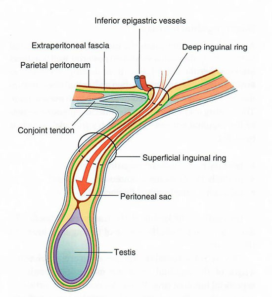
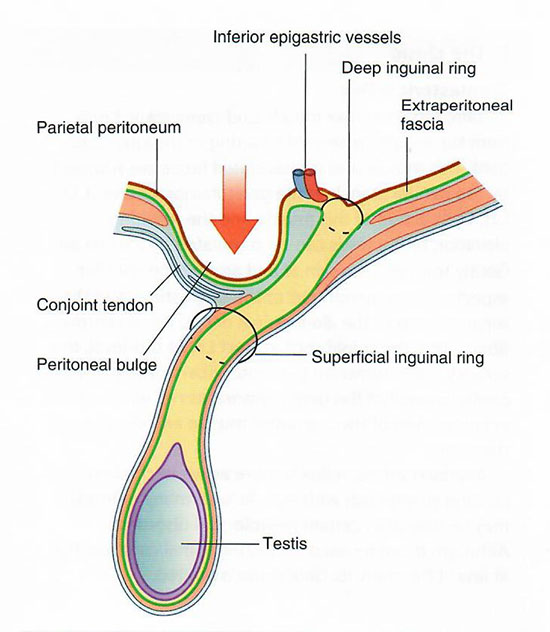

Anterior Abdominal Wall: Lab 4 - Page 6 of 6
An indirect hernia occurs through the deep inguinal ring. A hernia to the medial side of the inferior epigastric artery is a direct hernia.
|  |  |
| Indirect hernia Tap on image to enlarge |
Direct hernia Tap on image to enlarge |
What is the surgical significance of Hesselbach's Triangle? |
|
|
This is where direct hernias are found. |
|
| Femoral hernias are felt below the inguinal ligament. The herniated bowel passes through the very narrow canal between the femoral sheath and the symphysis pubis. |
Are femoral hernias congenital or acquired? |
|
|
They are acquired and occur mostly in middle aged and elderly populations. Femoral hernias are more common in females because of a wider pelvis. |
|